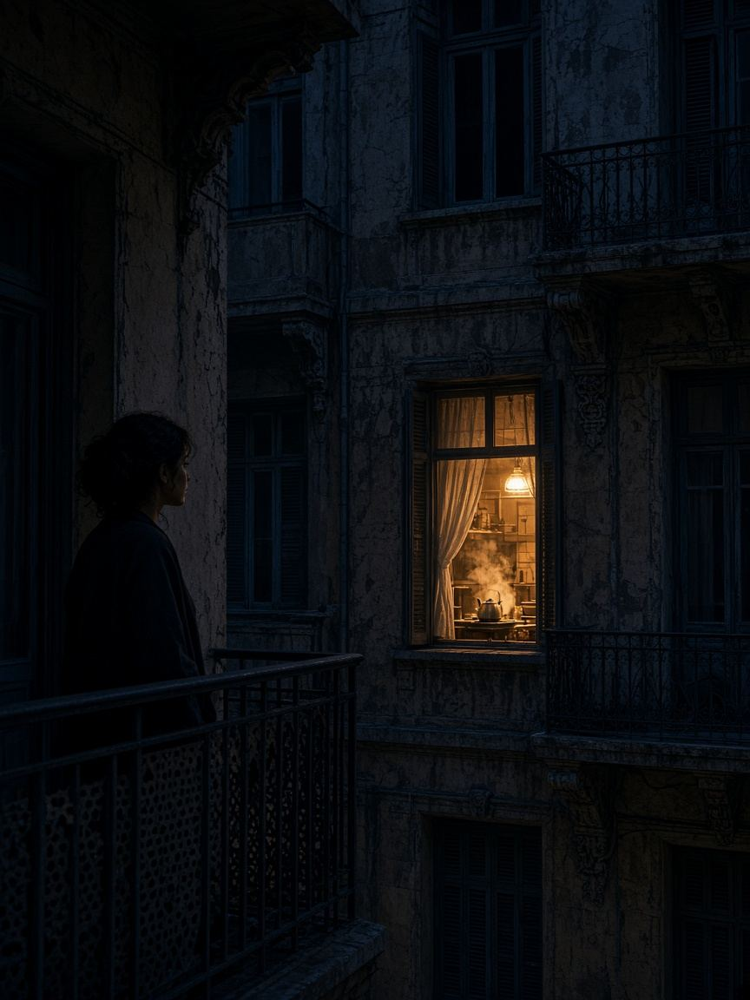

الصفارة ما رجعتش. اللي رجع كان الجرس، مرة واحدة، قبل اتناشر. مريم بصت من العين السحرية. نفس الجاكت. الراجل شايل كيس فيه حاجة بتلمع، ومش مفتاح. ما فتحتش. اتصلت بالبواب وهو لسه على السلم.
البواب طلع مع ابنه. الراجل قال إن الكيس فيه قطعة حنفية مدفوعة، وإن الحج طالبها. مريم قالت من ورا الباب: الحج في أكتوبر، والحنفية تتساب عند البواب باسمك. الراجل تردد. وبعدين ساب الكيس ونزل.
جوه الكيس فاتورة باسم محل في أول الشارع، وعنوان الشقة ١٧، وتاريخ قديم بشهر. مفيش طلب جديد. يعني الراجل راجع يخلّص حكاية قديمة، ومش عارف إن الحج مش هنا. الزعل كان من الفاتورة، مش من الغلاية.
دينا رجعت الصبح وشافت الفاتورة. اتصلت بالمحل. السباك قال إنه لقى مفتاح قديم في شنطة الشغل ومش عارف بتاع مين، وإنه افتكر ١٧ عشان الفاتورة. المفتاح ما فتحش أي باب عنده. هيرجعه للعمارة النهارده، من غير ما يطلع بيه تاني بالليل.